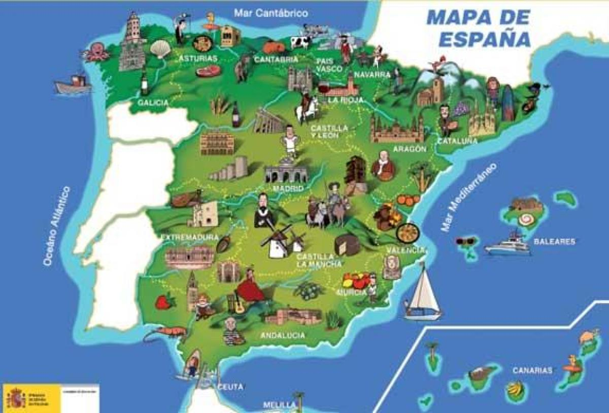
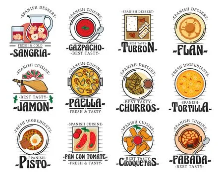

En Espagne il y a énorment de lieux intéressant la carte ci dessous en indique quelques un ,il ne faux pas oublié les différents parcs aquatiques et les plages qui entoure L'espagne qui additionné au climats chaud de l'Éspagne en été sont un atout non négligeable .
L’Espagne est connue et appréciée pour tout un tas de choses, son histoire, ses monuments et ses musées, ses plages, la douceur de vivre qu’on y trouve et l’esprit de fête qui y règne mais aussi pour sa gastronomie! Une gastronomie riche, variée et savoureuse fondée sur le partage et sur des produits provenant d’une nature généreuse.
L'espagne posséde un nombre impréssionnant d'activités que l'on peut réaliser car il y à une diversité de paysage et relief qui permettent de profiter de montagne de plage , de monument et de villes diverses et variées .